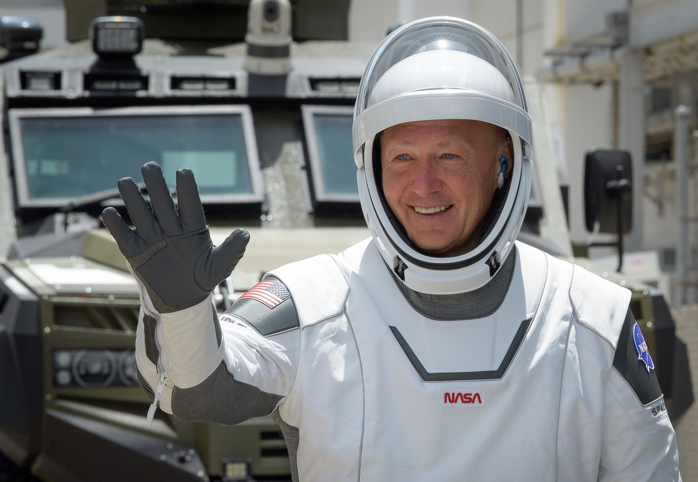

A PERSONAL FIELD GUIDE TO WHAT COMES NEXT
The future.
In context.
The companies. The breakthroughs. The big, unfinished ideas.
A living almanac of Elon Musk’s world — built on evidence,
driven by curiosity.
YOUR RESEARCH CONSOLE
Find the thread.
Follow the whole story.
Search the companies, explanations, chapters,
predictions, historical ventures and timeline.
THE PERSON BEHIND THE PROJECTS
Understand the approach.
Eight chapters connect the background, the methods,
the ambitions and the questions worth asking.
THE BUILDERS
Follow the missions.
What exists. What’s moving.
What still has to be proven.
Explore each mission
Ownership checked 16 October 2026. Starlink, xAI and X are shown as missions within the SpaceX group, not separate stock listings.
The earlier ventures explain how we got here.

THE REASON TO PAY ATTENTION
Impossible.
Until it isn’t.
On May 30, 2020, two NASA astronauts lifted off aboard a commercially built rocket and spacecraft. A real milestone. Built by thousands of people. Backed by years of work.
THE RESEARCH DESK
Signals worth following.
AMBITION, MEET EVIDENCE
Look at the
actual trajectory.
Big ideas deserve measurable results. Explore Tesla’s historical scale, including the years when growth slowed.
Historical series, 2020–2024. Company-reported figures; not a current operating dashboard.
Open Tesla’s source report ↗PROMISES AND PROGRESS
What was said.
What actually followed.
Each assessment names the claim, its timing,
the test for success and the available evidence.
Some entries track dated predictions. Others track a long-term goal or a demonstrated capability. Open an entry to see exactly what is being assessed and how its status was determined.
A LONG VIEW
One trajectory. Many turning points.
Selected milestones, with the original
record one click away.
Musk’s earlier businesses included Zip2, an online maps and directions company, and PayPal, an internet payments business. The later chapters moved from software into energy, manufacturing and space.
Company biography ↗UNDERSTAND IT. EXPLAIN IT.
The big questions.
Plain answers.
Start with the short version.
Go deeper. Take the sources with you.
MY PERSPECTIVE
Make the case.
In your own words.
Keep the accomplishments, the open questions, and your personal reasons in the same picture.
Saved in this browser only. Export a copy to keep it.EDITION 002 / 17 OCTOBER 2026
What changed in this edition.
THE SOURCEBOOK
Evidence you can open.View research & update method +
The company dossiers were researched on 16 October 2026. Historical chapters and prediction assessments were added on 17 October 2026. Each source carries its own publication or access date. Company announcements describe the company’s account; regulatory records describe agency findings. Analysis and personal opinion are labeled. Selected updates are not a complete news archive.
Keep this almanac current
Edit content.json and research.json, including source identifiers, publication dates and review dates, then run npm run check. Refresh the page to load your changes. No background news service or market-data integration is connected.